Construcción del mueble
Para la construcción del mueble he utilizado tableros de aglomerado de melamina negra de 19 mm de grueso.
Los cantos han sido chapados con canto de PVC de color negro.
Los laterales han sido marcados y contados a partir de la plantilla de cartón que he hecho de la máquina original, añadiéndole los 10 cm. de más.
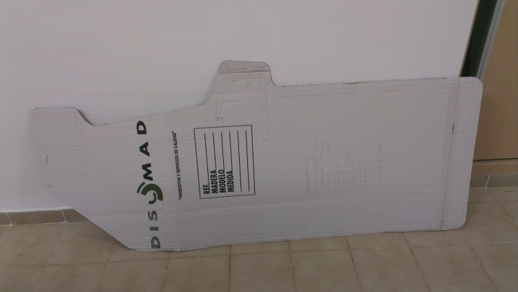
La unión de las piezas se ha realizado utilizando listones cuadrados de 2 cm. x 2 cm., consiguiendo que de esta forma no se vean los tornillos desde fuera.
El montaje se ha realizado encima de una mesa y la máquina colocada en posición horizontal, para su mejor montaje.
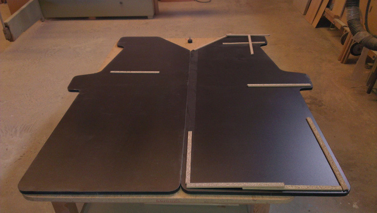
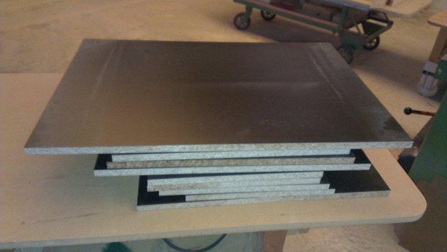
He empezado por la parte de abajo, que es la que más clara tenía.
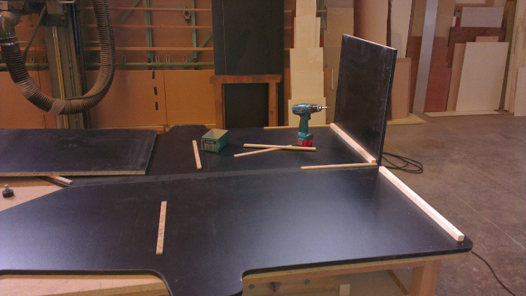
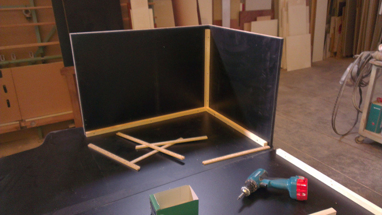
Después he montado la balda sobre la que se apoyará el monitor y los cristales del bezel.
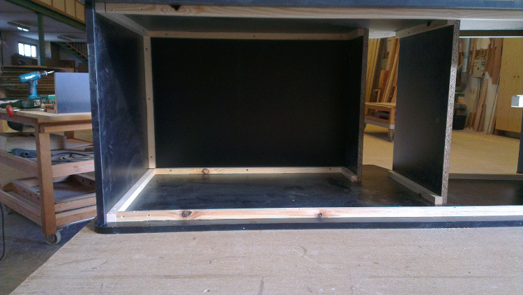
He acabado con la parte de arriba, que es la que menos clara tenía.
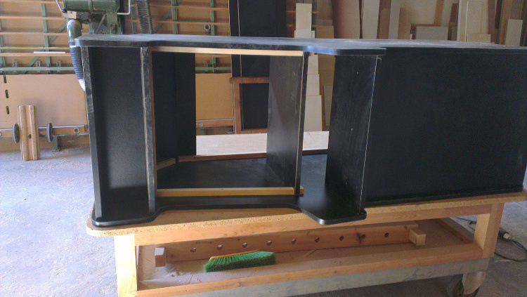
Para la puerta he utilizado una bisagra de piano, la cual da robustez a la puerta.
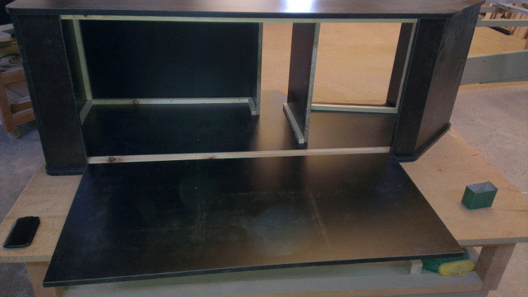
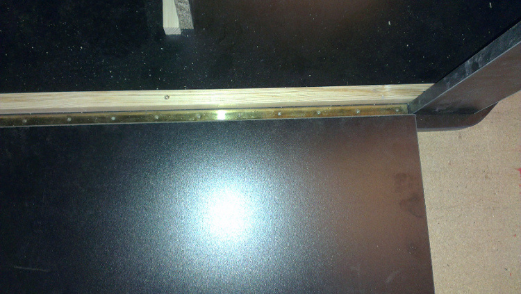
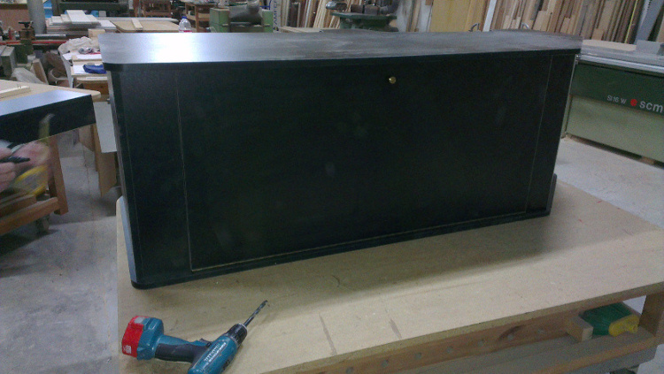
Para poder mover la máquina he montado 4 ruedas locas con bloqueo.
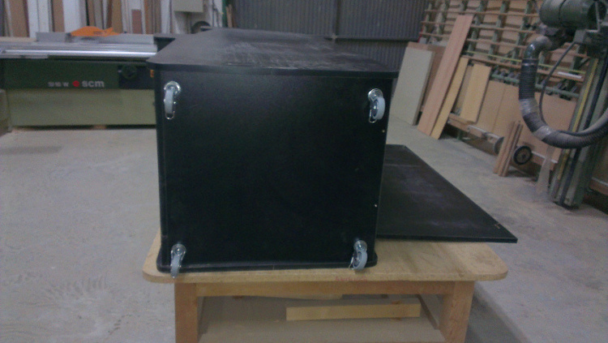
Para el panel de control también he utilizado una bisagra de piano.
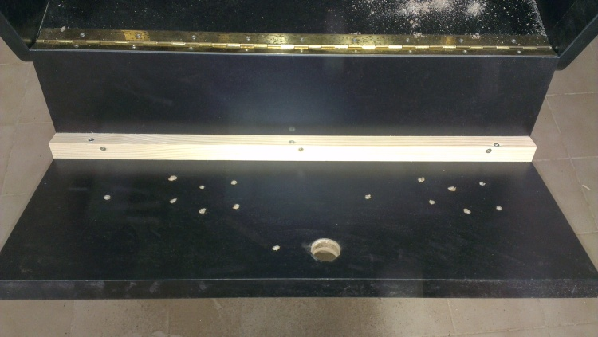